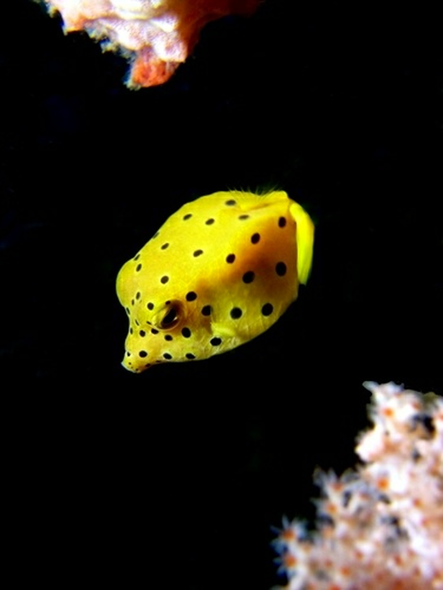
Open-set species recognition across a catalogue of 17,393 fish — and what thirty leaderboard evaluations taught us about trusting a held-out proxy.
Both of these species are on the list the system must choose from. Only one of them has ever appeared in front of a camera in the data we were given. The system is asked to tell them apart anyway.
Every evaluation image must be given one species name drawn from a fixed list of 17,393. For 11,598 of those species the organizers supply no photograph at all — only the scientific name and its position in the taxonomy. Scoring is population-weighted accuracy, so the two thirds of the catalogue that were never photographed still decide 43.65% of the result.
The system answers by splitting the decision rather than the data. A learned gate reads twelve signals off each image and sends it down one of two routes: a closed-set classifier over the 5,795 photographed species, or a retrieval route that scores the remaining 11,598 against text and against an external bank of 101,545 biodiversity photographs. The two routes share no scoring leg and their candidate sets are disjoint, so no image is ever subjected to a single 17,393-way decision.
Three ordinary engineering corrections produced nearly all of the gain: fixing an aspect-ratio mismatch between how the encoder was trained and how the evaluation images are framed; adding an external photograph bank for species that have no images of their own; and replacing a hand-derived routing threshold with a learned classifier. Each was found by measurement, after an assumption failed.
The more transferable result is about the validation setup rather than the model. Under a budget of three submissions per day and thirty in total, nearly every decision was screened on an internal held-out proxy first. Because that proxy is measurable, we measured it: across nine confirmed changes, the share of proxy gain that survived contact with the real evaluation ranged from parity down to a factor of 2,229.
That produced a rule we now apply before spending a submission. Interventions that add information the system did not have compound with the rest of the pipeline and transfer. Interventions that only re-weight information it already has return most of their proxy gain on the real evaluation, or reverse it. Both halves were confirmed twice, independently, on separate components. Section 6 gives the measurements.
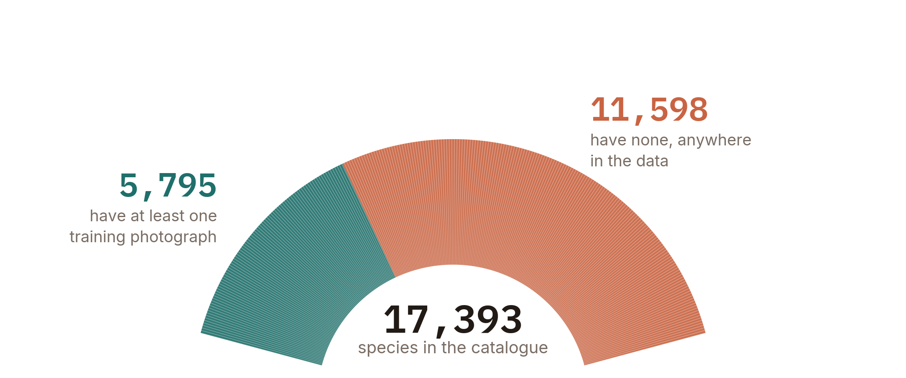
The label space holds 17,393 species. 5,795 of them appear somewhere in the 64,259 labelled training images. The other 11,598 appear nowhere in the training data and are known only by name and taxonomic placement. All 17,393 names are published in advance, which makes this generalized zero-shot recognition rather than open-set recognition: nothing is unknown, but most of it is unseen.
The evaluation set holds 35,665 images, split 20,097 to 15,568 between the two groups. Those proportions are the scoring weights — the metric is 0.5635 × accuracy on photographed species + 0.4365 × accuracy on the rest. One point on the first side is worth 0.56 overall points; one point on the second is worth 0.44.
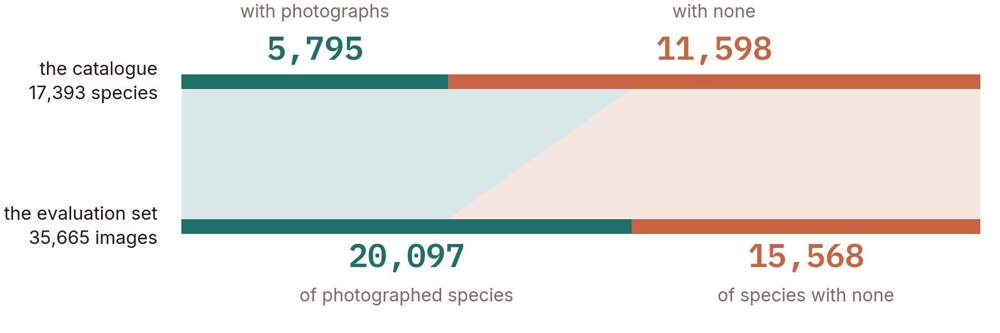
That asymmetry is the whole design problem. The two halves of the metric are wildly different in difficulty — at the end of this campaign the system reads 77.61% on species it has seen and 22.91% on species it has not — and yet they are weighted almost evenly. Every routing decision therefore trades one against the other, and at the margin the exchange rate is roughly four to one.
| quantity | count | share |
|---|---|---|
| candidate species | 17,393 | 100% |
| with training photographs | 5,795 | 33.3% |
| with none | 11,598 | 66.7% |
| labelled training images | 64,259 | 100% |
| used to train the adapter | 61,941 | 96.4% |
| withheld as a pseudo-novel proxy | 2,318 | 3.6% |
| evaluation images | 35,665 | 100% |
| of photographed species | 20,097 | 56.35% |
| of species with none | 15,568 | 43.65% |
| external bank photographs | 117,225 | — |
| embedded into the final bank | 101,545 | — |
Two constraints shape everything that follows. The rules forbid using evaluation split metadata to decide whether an image's true species is photographed, or to narrow its candidate set: one uniform procedure must run over all 35,665 images and emit a label from the full space. And the leaderboard allows three evaluations per day, thirty in total.
A thirty-evaluation budget changes the research process rather than merely slowing it. Almost every candidate change is screened on an internal held-out proxy, and only changes clearing a fixed margin are spent on a real evaluation. That makes the proxy's reliability a property worth measuring in its own right — which is what Section 6 does, and what this report is finally about.
Standard augmentation had been quietly training the encoder on a shape of image that the evaluation set does not contain.
The closed-set route was underperforming its held-out accuracy by roughly eight points on the real evaluation, and no amount of work on the classifier moved it. The cause turned out to be geometry. RandomResizedCrop, in its standard configuration, samples aspect ratios in [0.75, 1.33]. The evaluation images of species without photographs have a median aspect of 1.74 and a 90th percentile of 2.76.
Fish are elongated, and photographs of fish are framed accordingly. The encoder had effectively never been shown the shape of image it would be asked to classify.
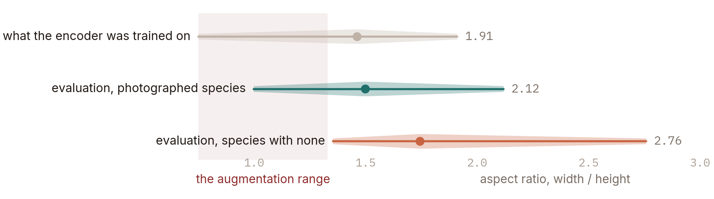
We corrected it twice, independently. At training time the augmentation range was widened to scale (0.35, 1.0) and ratio (0.5, 2.0). At inference time each query is scored under seven crop geometries — a centre crop, a full squash, and long-axis strips — combined with a max-over-crops rule.
| configuration | before | after | Δ |
|---|---|---|---|
| LoRA adapter, 224px | 86.10 | 86.70 | +0.60 |
| contrastive adapter, standalone | 26.62 | 31.10 | +4.48 |
| novel-class text stack | 29.38 | 31.45 | +2.07 |
Together the two corrections were worth roughly +1.60 real points across two submissions. It is the least glamorous finding in this report and one of the largest.
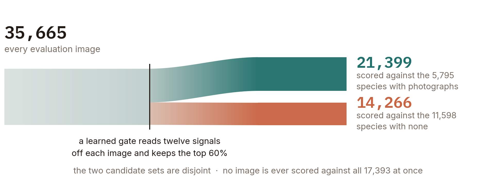
Three fine-tuned BioCLIP-2.5 ViT-H/14 encoders are ensembled at weights 1.0 / 2.5 / 2.5. Each member scores a photographed species by a genuine class prototype, plus its single best training exemplar, plus a taxonomic text anchor — the exemplar term weighted 2.0 and the text anchor 4.0. The argmax runs over all 5,795 photographed species, not merely the 4,636 that appeared in the adapter's training objective.
Species with no photographs were the binding constraint throughout, and text alone plateaued at 10.42%. Eight separate attempts to improve the text representation all failed, and they are catalogued in Section 7. What worked was giving those species pictures from somewhere else.
We assembled 117,225 photographs from the iNaturalist Open Data archive covering 7,364 of the species with no training images, capped at 24 per species, of which 101,545 were embedded into the final bank. A species is scored by the mean of its top-4 cosine similarities. That choice was measured rather than assumed: a plain class mean scores 43.49, a single nearest photograph 44.61, and top-4 pooling 45.25, flattening beyond that because many species hold only a handful of photographs.
The retrieval route also sums six text legs — four encoders across two prompt styles, plus TaxaBind — and two prototype sets from BioCLIP 2, one frozen and one LoRA-adapted. Its argmax runs over the disjoint 11,598.
The bank and the evaluation set are both drawn from public biodiversity imagery, so near-duplication is a real risk and we audited it directly, comparing all 35,665 evaluation embeddings against all 101,106 bank embeddings. Calibrated against genuinely different photographs of the same species, the split without training photographs has 0.906% of images above the duplicate threshold — about three times chance. Treating every one of those as free would inflate accuracy by at most 0.91 of the +10.15 points attributed to retrieval, or 8.9% of the claimed gain. The retrieval result survives that bound. An unqualified no-duplication claim would not, and an earlier version of this work made one.
Every raw similarity matrix enters through a double log-softmax — once across images, once across classes. The across-image term is the single most load-bearing normalization in the system: it penalises candidate species that are similar to everything, a hubness correction, and removing it costs 1.60 points on species without photographs.
Rows sent to the retrieval route then pass through a Sinkhorn projection at τ = 1.8 over 60 iterations, pushing the assignment toward a uniform prior across the 11,598 candidates. It raised vocabulary usage from 38.6% to 57.5% and was worth +0.09 real points — inside this report's own noise band, and retained more for its effect on the distribution than for its measured gain.
The system is transductive at five points: the rank-quantile threshold, the across-image normalization, the Sinkhorn column prior, and two batch-level score standardizations. Freezing the largest of these against a reference pool instead of the test batch changes 296 of 35,665 predictions, which bounds the coupling at 0.63 overall points. The learned gate and both re-rankers add no coupling of their own — each scores one image, or one candidate, at a time.
Writing s and u for the kept and ejected fractions and a and b for conditional accuracies, overall accuracy is wT·s·a + wU·u·b. The marginal image is worth ejecting only once purity clears a/(a+b).
At a = 86.0% and b = 19.5% that threshold sits at 81.5%, setting optimum f = 0.72. Once retrieval raised b to 26.0%, the threshold fell to 77.2% and optimum f moved to 0.60 (+0.60 real points) — a direct consequence of retrieval work rather than an independent discovery. The fraction has not moved since.
What did move was decision quality at that fixed operating point. A 12-feature logistic classifier (seen-head similarity, margins, entropy gaps, per-encoder maxima, dual-text margins, and photo-bank confidence) replaced the two-signal derived rule on a class-disjoint holdout.
| gate | features | AUC, real | overall |
|---|---|---|---|
| derived, two standardized signals | 2 | 0.9084 | 51.62 |
| learned, C = 1 | 12 | 0.9314 | 53.383 |
| learned, C = 100 (re-weighted) | 12 | — | 53.425 |
It is the only change in the project that improved both sides at once: accuracy on photographed species rose from 75.67% to 77.72% and on the rest from 20.57% to 21.96%, in a single submission. Everything else traded.
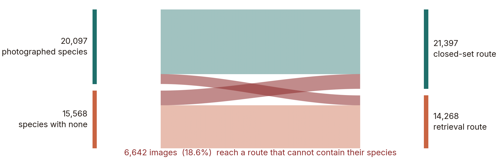
That 18.6% is the structural price of the architecture, bounding what classifier work can recover. Gate quality was worth a submission because each point of gate accuracy rescues images from that band, lifting both routes at once rather than trading between them.
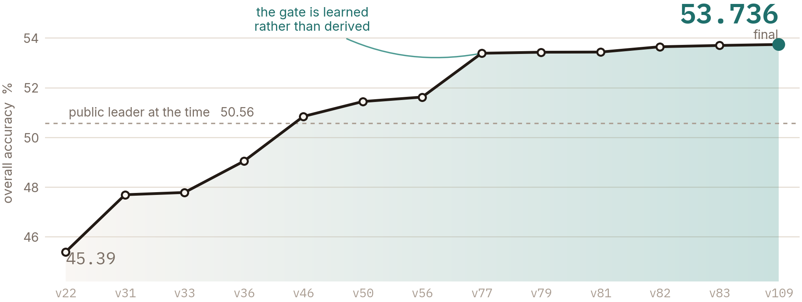
Almost every lever moved accuracy from one side of the split to the other at roughly four to one, set by the metric weights. Retrieval buys accuracy on species without photographs; routing more images to the closed-set branch buys accuracy on the others. Plotted against both axes at once, the exception becomes visible.
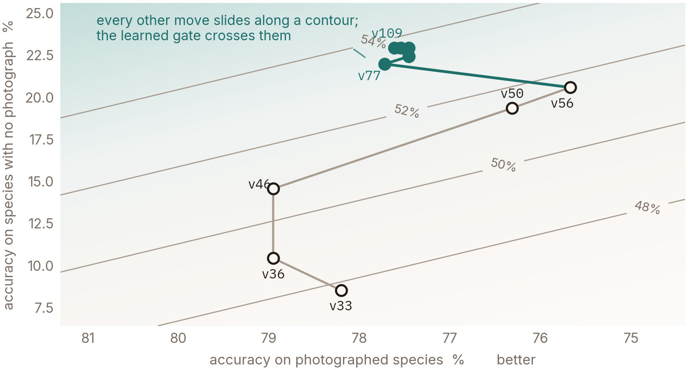
| id | change | photo'd | none | overall |
|---|---|---|---|---|
| v22 | closed-set, shift-robust ensemble | — | — | 45.39 |
| v31 | routing fraction f = 0.72, per image | — | — | 47.69 |
| v33 | Sinkhorn on the retrieval route | 78.20 | 8.51 | 47.78 |
| v36 | corrected augmentation, TaxaBind | 78.95 | 10.42 | 49.04 |
| v46 | external bank merged on both legs | 78.95 | 14.55 | 50.84 |
| v50 | routing fraction f = 0.60 | 76.31 | 19.34 | 51.44 |
| v56 | crop views, 336px bank | 75.67 | 20.57 | 51.62 |
| v77 | learned 12-feature gate | 77.72 | 21.96 | 53.383 |
| v79 | gate re-weighted, C = 100 | 77.45 | 22.41 | 53.425 |
| v81 | re-ranker, trained on a leaked proxy | 77.45 | 22.42 | 53.431 |
| v82 | re-ranker, leak closed | 77.45 | 22.91 | 53.644 |
| v83 | closed-set re-ranker added | 77.54 | 22.91 | 53.697 |
| v109 | genus-level hierarchical backoff | 77.61 | 22.91 | 53.736 |
A perfect-gate ceiling computed at the v36 configuration, substituting population-level conditional accuracies for the ones actually received, gave 53.5% against 49.0% as routed — so the entire prize then available from solving routing was about four and a half points, requiring a gate AUC near 0.97 against an achievable 0.9084.
The final 53.736% exceeded that historical target, but by moving the whole system — retrieval bank, learned gate at AUC 0.9314, leak-free re-ranking — rather than by reaching a near-perfect gate at the original operating point. On the project's own transfer accounting, both re-ranking heads now sit within roughly 0.65 overall points of their measured ceilings, which is why per-candidate re-ranking is treated as closed.
This is the part of the work we would hand to someone else first.
Internal measurements use a pseudo-novel split: the 1,159 rarest training species are withheld entirely, and 2,318 of their images are scored against the full candidate list under class-disjoint cross-validation. It is a careful proxy, and it still fails in three distinct ways — two of them well known.
Magnitude is not preserved. Transfer ratios across confirmed changes span 0.018 to 0.359, a twentyfold range. Sign is not preserved. Two changes gained proxy points and lost real ones. Ordering is not preserved either: a simpler unified architecture that discards the routing split was preferred by the proxy at 57.02 against the routed system's 50.71, and lost by at least 1.36 points in reality.
The population is not preserved. On the proxy, the correct answer is always one of the 1,159 withheld species — 9.1% of the candidate pool — and that subpopulation is identifiable from its own features, because withheld species have training images and therefore distinctive prototype and bank statistics.
A re-ranker trained on that pool learned to prefer answers from the eligible 9.1%, picking them 53.7% of the time against the fused baseline's 38.4%. It was not ranking evidence. It was detecting the shape of the holdout.
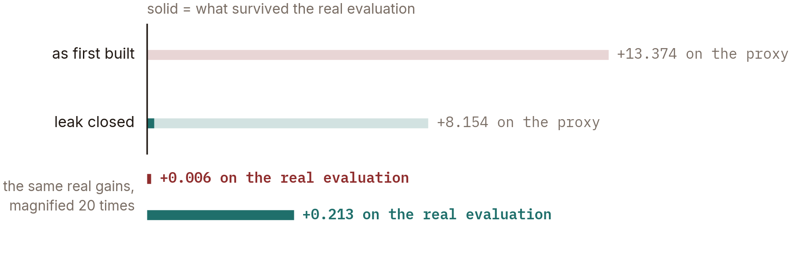
Class-disjoint cross-validation does not catch this. Splitting which withheld species land in each fold still leaves every fold's answer inside the same 9.1% subpopulation. The defence that protects against memorising a class does nothing against identifying a population.
Restrict the candidate pool so that every candidate is eligible to be the answer, and replace raw score levels with within-query percentile ranks so the features cannot encode pool size. The proxy gain falls from +13.374 to +8.154. The real gain rises from +0.006 to +0.213 — a 35× better-transferring signal from a smaller-looking number.
Two independent components let us test whether the kind of a change, rather than the size of its proxy gain, predicts what the real evaluation will say.
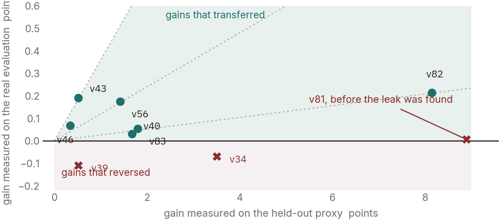
| change | kind | proxy | real |
|---|---|---|---|
| routing gate, ten new features | new information | — | +1.767 |
| the same twelve, re-weighted | re-weighting | — | +0.042 |
| genus-level sibling similarity | new information | +0.101 | +0.039 |
| closed-set fusion weights re-tuned | re-weighting | +1.34 | −0.17 |
The practical consequence is a budgeting rule. A proxy gain from a change that supplies evidence the system did not previously have is worth a submission. A proxy gain from a change that only redistributes weight over evidence it already had is not, however large the proxy number looks. Under this rule the two reversals in Table 8 would not have been submitted.
The ideas that sounded most promising are the ones that failed hardest. The system that survived is unglamorous by comparison.
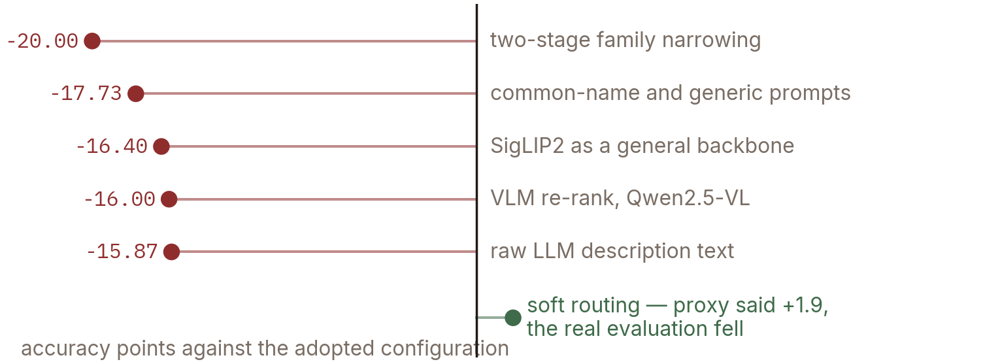
Eight frozen backbones were compared on the same held-out proxy. Domain pretraining dominates scale by a wide margin — a general-purpose SigLIP2 SO400M reaches 5.13 where the adopted biology encoder reaches 21.53 — but the more useful observation is the last row.
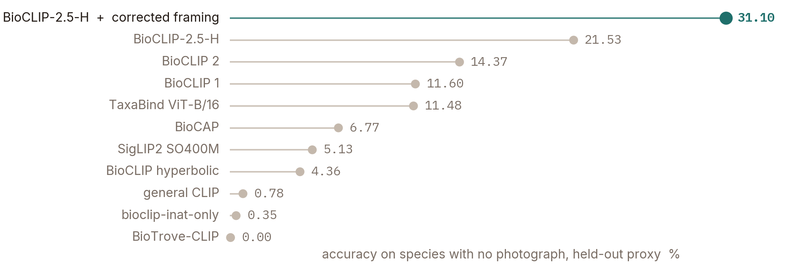
One negative result deserves separate mention, because the obvious reading of it is wrong in an instructive way. Seven adapters for the external-prototype encoder were scored standalone. Ranked by raw score, the best reaches 15.53 while the adopted one reaches only 14.50 — yet fused into the system the first contributes +0.00 and the second +0.43.
| variant | base | best | Δ own | fused |
|---|---|---|---|---|
| name text | 15.36 | 15.53 | +0.17 | +0.00 |
| full-slice, warm init | 13.76 | 15.01 | +1.25 | — |
| full-slice, cold init | 14.15 | 14.80 | +0.65 | — |
| rank-32 | 14.15 | 14.67 | +0.52 | — |
| taxonomic context — adopted | 13.76 | 14.50 | +0.74 | +0.43 |
| hard-negative mining | 13.76 | 14.06 | +0.30 | — |
| no external photographs | 13.76 | 13.63 | −0.13 | — |
The two were trained against different text targets and so started from different baselines, 15.36 and 13.76. Measured as improvement over its own starting point the ordering reverses, +0.17 against +0.74, which agrees with the fused result. The lesson is narrower and more useful than "component scores mislead": a raw score compared across differently-initialised runs misleads, and the delta recovers the right answer where the level does not.
| attempt | result |
|---|---|
| General backbone, SigLIP2 SO400M | 5.13 vs 21.53 |
| BioTrove-CLIP, two variants | 0.00 / 0.04 |
| Common-name and generic-ensemble prompts | 8.89 / 22.00 vs 26.62 |
| LLM-compressed trait text / raw descriptions | 17.08 / 7.51 vs 23.38 |
| Hard two-stage family narrowing | −20 points |
| VLM top-K rerank, Qwen2.5-VL and DeepSeek | −16.0 / −11.33 |
| CORAL / quantile-gate domain adaptation | harness valid, no lift |
| Unsupervised embedding whitening | at or below baseline |
| HistGradientBoosting vs. logistic re-ranker | −0.008 / +0.003 |
| Seen-route new-evidence sweep, 31 mechanisms | 1 survivor |
| Sinkhorn re-added atop the re-ranked route | untested since v81 |
| Soft, non-hard routing | proxy +1.9, real fell |
| risk | level | what it means for the numbers here |
|---|---|---|
| Adaptation to the evaluation set | High | Thirty sequential leaderboard evaluations with no Ladder-style protection. The routing fraction and the Sinkhorn temperature were set from real feedback, and the augmentation correction was derived by measuring the evaluation images themselves. This touches every real number in the report. |
| Domain gap in the bank | Medium | The audit bounds near-duplication at 8.9% of the retrieval gain. It does not show that bank photographs and evaluation images share a distribution — they demonstrably do not, and that gap is why proxy measurements on this branch mislead. |
| Sequential tuning | Medium | Routing fraction, fusion weights and bank weight were tuned one at a time against a proxy that Section 6 shows is unreliable on exactly those axes. The final configuration is not claimed to be jointly optimal. |
| No significance testing | Medium | Every real number is one evaluation of one configuration. The final change nets an estimated 14 images out of 35,665. Any row below 0.1 points should be read as directional at best; McNemar needs a discordant-pair split by direction that the labels do not give us. |
| Undiscovered proxy leaks | Medium | We found one population leak and closed it. The learned gate and both re-rankers are still fit on a proxy, and we cannot rule out a different leak in the same features. |
| Component count | Medium | Three closed-set encoders, six text legs, two image banks, two prototype sets, two normalizations, a learned gate and two re-rankers — more interacting parts than the configuration it replaced, not fewer. A chronological ledger is not a factorial experiment. |
| Single benchmark | Medium | One dataset, one taxonomic domain, one encoder family. The transfer rule of Section 6 is the finding we would most expect to generalize and the one we can least demonstrate generalizes. |
| Batch coupling | Low | Transductive at five points, bounded by measurement at 0.63 overall points; the Sinkhorn step's own contribution is +0.09, inside the noise band above. |
| Unmeasured cost | Low | Throughput, memory and energy were never measured. A real gap in the reporting, but not a threat to the accuracy numbers. |
Each stage reads the previous stage's output. Run from the repository root in the onet environment.
# retrain the genus re-ranker, then build the final submission python research/genus_rerank_v103_train.py python builders/build_v81_rerank.py python builders/build_v82_rerank_leakfree.py python builders/build_v83_rerank_both.py python builders/build_v109_genus_gamble.py # 53.736%
Builders from v81 onward consume outputs/learned_gate_v79.pkl, a refit of the v77 gate at a different regularisation strength. The committed training script hard-codes the original value, so that exact file cannot be regenerated from the repository as it stands. The pickle is included. Everything else in the chain rebuilds from source.
A compliance fallback is kept alongside it. If the transductive steps are ever challenged, build_v31_strict_singlepipeline.py reproduces a fully per-image variant of the same architecture, scoring 47.69%.
The system reached 53.736% by correcting a framing mismatch, giving unphotographed species pictures to be compared against, and learning the routing decision instead of deriving it. The result we would hand to someone else is smaller and duller than any of those: under a tight evaluation budget, check what population your held-out set draws its answers from before you trust a number measured on it, and spend your submissions on changes that add evidence rather than changes that re-weight it.
| component | setting | component | setting |
|---|---|---|---|
| closed-set backbone | BioCLIP-2.5 ViT-H/14 ×3 | routing gate | 12-feature logistic, f = 0.60 |
| ensemble weights | 1.0 / 2.5 / 2.5 | gate threshold | rank quantile, not confidence |
| prototype backbone | BioCLIP 2 ViT-L/14 | retrieval re-ranker | 34 features, leak-free pool |
| external bank | 117,225 photos / 7,364 species | closed-set re-ranker | 32 features, leak-free pool |
| bank embedded | 101,545 | genus backoff | sibling pool, weight 3.0 |
| bank scoring | mean of top-4 cosines | Sinkhorn | τ = 1.8, 60 iterations |
| text legs | 6, including TaxaBind | inference views | 7 per image |
Z = standardize(X, torch.full((X.shape[0],), 1.0 / X.shape[0]))
combined = torch.tensor(
gate['model'].predict_proba(Z.numpy())[:, 1],
dtype=torch.float32).to(dev)
k_seen = int(round(SEEN_FRAC * len(all_files))) # f = 0.60
thr = torch.topk(combined, k_seen).values.min()
route_seen = combined >= thr # quantile, not confidence
pred_idx[route_seen] = kept_idx[
seen_block[route_seen].argmax(1)] # over 5,795
idx_uns = (~route_seen).nonzero(as_tuple=True)[0]
pred_idx[idx_uns] = other_idx[
sinkhorn(text_unseen_only[idx_uns], tau=TAU)
.argmax(1)] # over 11,598
From builders/build_v77_learned_gate.py. A logistic classifier's probability, thresholded at the f = 0.60 sample quantile, then two disjoint argmaxes.
The pool-size invariant feature transformation that eliminated cross-validation subpopulation leakage.
# restrict the holdout pool to the 1,159 pseudo classes ONLY, # so every candidate is eligible and the shortcut carries # zero information pool = torch.tensor(sorted(D.ci[c] for c in D.pseudo)) def pool_features(legs, topk, n_photos, fused): """Pool-size-invariant version of the v81 features.""" nq, k = topk.shape C = fused.shape[1] # 1,159 here, 11,598 real for name in LEGS: M = legs[name] v = torch.gather(M, 1, topk) cols += [v - M.max(1, keepdim=True).values, (v - M.mean(1, keepdim=True)) / (M.std(1, keepdim=True) + 1e-6)] r = ... # percentile rank, not raw rank cols.append(r / C) # pool-size invariant
From research/rerank_leakfree_v82.py. Every rank feature becomes a percentile, so training on a 1,159-class pool and scoring an 11,598-class one are the same computation.